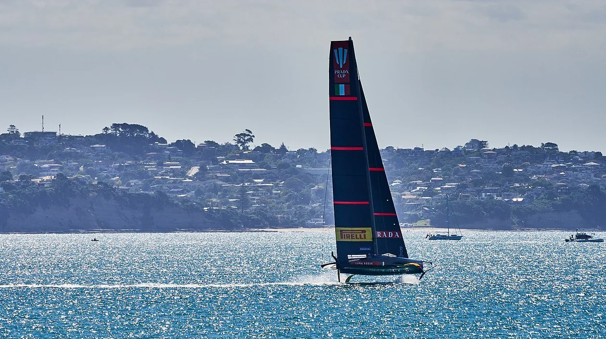
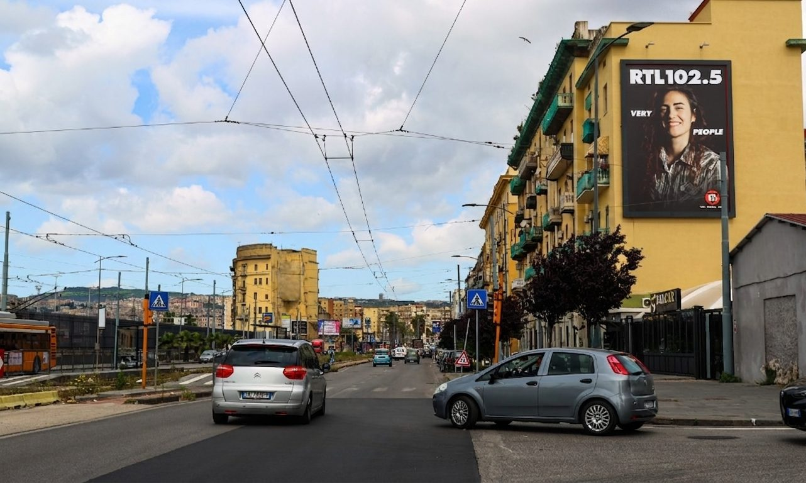

La vela più prestigiosa del pianeta — la Louis Vuitton 38ª America's Cup — per la prima volta in Italia, sfida nel Golfo di Napoli sotto lo sguardo del Vesuvio. Per mesi, milioni di occhi italiani e internazionali saranno puntati sulla città. È il momento perfetto per farsi notare.
Prenota il tuo maxi impianto Vedi i maxi formatiOra in corso · 2026
Regata Preliminare Louis Vuitton
24–27 settembre 2026 · Lungomare Caracciolo, Rotonda Diaz — Golfo di Napoli
L'evento clou · 2027
Louis Vuitton Cup & Match
Match dal 10 luglio, finale 17–18 luglio 2027 · basi dei team a Bagnoli
Cos'è l'America's Cup
Nata nel 1851, l'America's Cup è la competizione velica più prestigiosa e antica dello sport: una vera “Formula 1 del mare”. Nel 2027, per la prima volta nella sua storia, la Louis Vuitton Cup e il Match si disputeranno in Italia — nel Golfo di Napoli.
In acqua le imbarcazioni volanti: i catamarani AC75 e AC40 che sfrecciano sui foil a oltre 90 km/h, con il Vesuvio a fare da sfondo. Napoli non è nuova a questo palcoscenico: le America's Cup World Series del 2012 e 2013 portarono oltre un milione di spettatori sul lungomare.
In gara verso la Coppa:

Luna Rossa · Foto: Geoff McKay, CC BY 2.0Perché conta per il tuo brand
Media di tutto il mondo, appassionati di vela, delegazioni, sponsor globali e turismo d'élite: per mesi Napoli è al centro dell'attenzione internazionale. Una vetrina che una città vive poche volte in una generazione.
Lungomare, centro storico, direttrici d'accesso e quartieri si popolano di visitatori in movimento. Un pubblico enorme, qualificato e curioso — esattamente il terreno dove la comunicazione esterna dà il meglio.
Farsi vedere a Napoli in questo periodo significa parlare a chi vive l'evento sul posto e, allo stesso tempo, cavalcare l'onda mediatica nazionale che accende i riflettori sulla città.
La reason why
Quando una città si riempie di occhi, il fuori casa è l'unico media che li raggiunge tutti: non si spegne, non si salta, nessun ad-blocker lo ferma. È lì, grande, per giorni interi, su chi passa a piedi e in auto.
I nostri maxi formati presidiano le direttrici a più alta affluenza di Napoli — Via Marina, Via Diocleziano, Via Foria e gli assi verso il centro e il lungomare: proprio i flussi che l'America's Cup moltiplica. Farsi notare qui, ora, vuol dire trasformare l'attenzione dell'evento in visibilità concreta per il tuo brand.

Maxi 7×10 · Via Marina, NapoliGli spazi migliori per il periodo dell'America's Cup sono limitati e si assegnano in fretta. Prenota ora i tuoi maxi impianti a Napoli: ti prepariamo mappa, posizioni e preventivo.
Prenota i maxi impianti